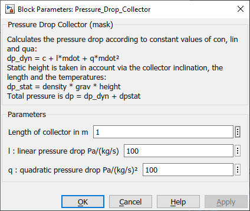

Pressure_Drop_Collector
Path: CARNOT/Basic/Pressure_Drop
Purpose:
The block calculates the pressure drop of a solar thermal collector.
Description:
Calculates the pressure drop according to constant values of con, lin and qua:
dp_dyn = c + l*mdot + q*mdot²
Static height is taken in account via the collector inclination,
the collector length and the node temperatures:
dp_stat = density * grav * length * sin(inclination)
Total pressure is
dp = dp_dyn + dpstat
The pressure drop is included in the pressure of the THB. The pressure
coefficients clq of the THB are also adapted.
Calculation is done for Flow_ID > 10000, static height only for Flow_ID > 20000, see
Basic Concepts for details.
The block is used for example in the SolarCollector
and Collector_1xN.
Input:
| Tnodes | : | node temperature or temperatures of the solar thermal collector in °C |
| THBin | : | incomming Thermo Hydraulic Bus |
| positon | : | positon vector of the collector, see Fixed_Surface |
Output:
| THB | : | leaving Thermo Hydraulic Bus |
Parameters and Dialog Box:

Characteristics:
| Direct Feedthrough | : | Yes |
| Sample Time | : | Inherited from driving block |
| Vectorized | : | No |